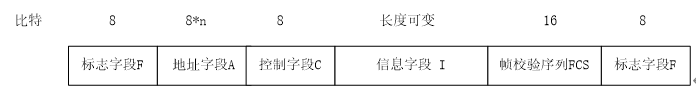
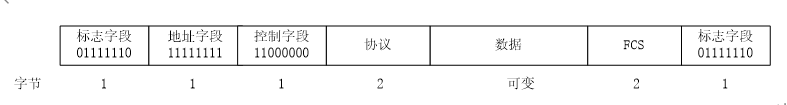

1.
2.进行流量控制的两种方法是
3.数据链路层常用的检测帧错误的方法是
4.在数据帧的传输过程中，可能会出现两类错误，一个是
5.数据链路层为了检测数据帧或确认帧丢失，每发送一个数据帧都设置一个
6.连续ARQ 协议中用n 个比特进行数据帧编号， 则其发送窗口WT 的大小应满足
7.确认帧ACKn 表示前续数据帧已经收到，现在期望接收第
8. HDLC 协议定义3 种类型的帧，分别是
9. PPP 协议中，认证所用到的协议是
1.流量控制是为了防止（C）。
A.比特差错
B.发送方缓存溢出
2.在滑动窗口流量控制中，接收窗口左侧的帧是（B）。
A.接收但未确认
3.在滑动窗口流量控制中，接收窗口里面的帧是（C）。
A.接收但未确认
B.接收并己确认
4.在滑动窗口流量控制中，接收窗口右侧的帧是（D）。
A.接收但未确认
B.接收并己确认
C.当前可以接收
5.在滑动窗口流量控制中，发送窗口左侧的帧是（A）。
6.在滑动窗口流量控制中，发送窗口里面的帧是（C）。
A.己发送并己被确认
B.接收并己确认
7.在滑动窗口流量控制中，发送窗口右侧的帧是（D）。
A.已发送并己被确认
B.己发送但未被确认
C.当前可以发送
8.在连续ARO 协议中，如果1，2，3 号帧被正确接收，那么接收方可以发送一个编号为（D）的确认帧给发送方。
A.1
B.2
C.3
9.对于发送窗口大小为n 的滑动窗口，在没有收到确认以前，最多可以发送（C）多少
个帧。
A.0
B.n-1
10.在滑动窗口流量控制(窗口大小为8)中，ACK3 意味着接收方已经收到了第（A）
号帧。
11.ARQ 代表（B）。
A.自动重复量化
12.当发出（A）后，定时器开始启动。
13.在连续ARQ 协议中，如果数据帧使用4bit 来编号，则发送窗口最大为（D）。
A.4
B.8
C.16
14.在连续ARQ 协议中，如果数据帧使用4bit 来编号，则接收窗口大小为（D）。
A.4
B.8
C.l6
15.在停止等待协议中，数据帧用（A）个比特来编号。
16.在停止等待协议中，接收方窗口大小为（D）。
A.4
B.8
C.16
17.HDLC 是（A）协议。
18. HDLC 的（A）字段定义帧的开始和结束。
19.PPP 帧中，（D）字段定义数据字段的内容。
A.标志
B.地址
C.控制
20.关于HDLC 协议和PPP 协议，错误的是（D）。
A. HDLC 协议提供流量控制和差错控制的功能
B.HDLC 协议可以用于多点通信
C. PPP 协议只能用于点对点通信
21.BSC 协议中，表示正文开始的特殊控制字符是（B）。
A.SOH
1. 数据链路和链路有何区别？
链路指的是一条无源的点对点的物理路线，中间没有任何结点，链路也称数据电路、物理链路。物理链路是数据传递的物理基础，数据要转换成电磁信号在链路上传递。
但是仅有物理链路是不够的,通信双方必须商定一些通信规则，用来控制数据的传递，保证数据传输的正确性，这些规则就是数据链路层协议。物理链路和它上面运行的数据链路层协议一起组成了数据链路。
2. 数据链路层的功能有哪些？
（1） 数据链路管理。发送方和接收方要通过对话建立、维护和终止数据的传输过程。
（2） 成帧。把数据组成一定大小的数据块——帧。以帧为单位发送、接收和校验数据。
（3） 流量控制。限制发送方发送数据的速率，以免其发送过快，导致接收方来不及处理而丢失数据。
（4） 差错控制。数据帧在传递过程当中可能会受到干扰而发生改变,造成数据传输错误。数据链路层要能发现这些错误，并采取措施进行补救。
3. 帧是如何生成的？什么是帧同步？常用的帧同步的方法有哪些？
收到网络层的数据后，数据链路层要数据前面填加一个首部，通常还会在数据后面填加一个尾部，将数据封装起来，形成帧。
在接收方，数据链路层要能从收到的一长串0、1比特中要能识别帧的开始和结束，区分出一个一个的帧，这称为帧同步。
常用的帧同步的方法有：字节计数法、使用字符填充的首尾标记法、使用比特填充的首尾标记法、物理层编码违例法。
4. 简述停等和滑动窗口的原理。
停止等待是最简单的流量控制方法。发送方每发完一帧后要等待接收方的确认，收到确认后才能发下一帧，如果没有收到确认，发送方必须一直等待，这样可以保证发送数据的速率不会超过接收方处理数据的速率。
在滑动窗口中，发送方和接收方都维持一个缓冲区，用来存放数据帧，发送方的称为发送窗口，接收方的称为接收窗口。发送方要对帧模n进行编号，在发送窗口中的帧可以直接发送而不用等待确认；在接收方如果收到帧的编号落入接收窗口内，就接收该帧，同时向对方发送确认，接收窗口向右移动。发送方收到确认后，发送窗口向右移动，从而可以继续发送后面的帧。
5. 数据链路层是如何进行差错控制的？
数据链路层的差错分为两种情况：帧损坏和帧丢失。数据链路层广泛地使用了CRC校验来发现帧损坏的情况。对于损坏的数据帧，接收方直接丢弃。如果收到了正确的数据帧,就发送确认帧；发送方每发送一个帧，就为该帧启动一个定时器。如果定时器时间到了，但确认帧仍未收到，就认为该帧丢失了。
不论是帧损坏还是帧丢失，数据链路层通常都不会去修正错误，而是简单地重传出错的帧和丢失的帧，这个过程称为自动重复请求。
6. 面向字符的链路层协议和面向比特的链路层协议各自有什么样的特点？
面向字符的协议中，每一个数据帧都是由若干个字符组成的，每个字符通常用一个字节（8比特）表示。在协议中定义了一些特殊的字符表示特殊的含义（如帧的开始、帧的结束、数据的开始，数据的结束等）。面向字符的协议有一个很大的缺陷就是强烈地依赖字符集,使用不同字符集的机器不能利用字符协议进行通信，扩展性差。
面向比特的协议是以比特单位的，不依赖特定的字符集，每一帧是由若干个比特组成。一个帧分为若干个字段，每个字段在帧中都有固定的位置，都有特定的功能和含义，同时使用一些特殊的比特组合来代表特殊的含义（如帧的开始和结束）。目前的数据链路层协议主要是面向比特的协议。
7. 分别给出HDLC协议和PPP协议的帧格式。
HDLC帧格式：

PPP帧格式：

8. BSC协议和HDLC协议是如何实现数据的透明传输的？试举例说明。
在传输的数据中可能会出现控制字符，为了防止接收方产生错误，BSC协议在传输报文时，所有的控制字符前面都要添加转义字符DLE（SYN除外），如果在数据中出现了DLE，那么就用DLE
DLE来表示。这样在接收方如果发现单个的DLE字符，则可知其后为传输控制字符；若发现连续两个DLE字符，则知道传输的是单个的数据字符DLE，删除一个DLE即可。利用这种方法，实现了数据的透明传输。
HDLC协议使用零比特添充法来实现数据的透明性传输。HDLC协议使用01111110作为标记,表示数据帧的开始和结束。在发送帧时，发送方要检查所发送的比特序列，如果发现连续的五个1，就在后面添加一个0，而不管这5个1原来后面是什么。这样做就避免在帧的内部出现连续的6个1，自然也就不会出现01111110。接收方接收帧时，也要检查所收到的比特序列，如果发现连续的5个1后面有一个0，那么这个0一定是发送方填加的，直接将其去掉就可以还原原来的数据。
9. 使用PPP协议访问网络要经过几个阶段？
（1） 建立数据链路阶段，这一阶段主要的协议是LCP。
（2） 认证阶段，这一阶段主要的协议是PAP或CHAP。
（3） 协商网络层参数，申请IP地址阶段，这一阶段主要的协议是IPCP。
（4） 发送、接收IP数据阶段，这一阶段主要的协议是IP。
（5） 终止网络层活动阶段，这一阶段主要的协议是IPCP。
（6） 终止数据链路阶段，这一阶段主要的协议是LCP。
10. 简述PAP协议与CHAP协议的不同
PAP和CHAP都是用户认证协议。PAP直接将用户名和密码发送到系统进行验证，安全性不好。
CHAP协议不直接发送用户名和密码，而是根据系统发来的Challenge值，使用事先定义好的函数作用于Challenge值和用户的口令，生成一个值，将这个值和用户名发送给系统。系统收到后，根据用户名查找到对应的口令，使用相同的函数对Challenge值和查到的口令进行计算，如果结果和用户发来的值相同，那么就通过认证，否则认证失败。
11．对001111111011011111001进行零比特填充的结果是什么？11011111100111111100是经过零比特填充的二进制串，是将其还原。
对001111111011011111001进行填充的结果是001111101101110111110001；11011111100111111100还原的结果是11011111100111111100。